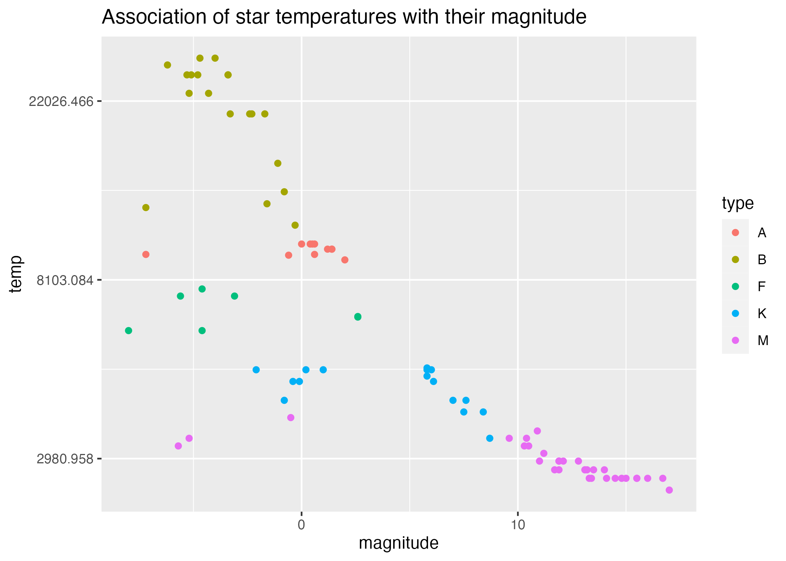

In this first section I am making sure the main package is installed by trying to refresh my memory on how to do that in R.
#Getting started#Check to see that dslabs package is installedpackage_name <-"dslabs"#Check if the package is in the list of installed packagesis_installed <- package_name %in%rownames(installed.packages())#Print the resultprint(is_installed)
[1] TRUE
#In this chunk of code I used ChatGPT to help with the installed.packages command. I am still very new to R.
In this second section, I am loading the appropriate packages and checking the data.
#Loading and checking data#Choosing a CRAN mirror URL based on your locationcran_mirror <-"https://cloud.r-project.org"#Setting the chosen CRAN mirroroptions(repos =c(CRAN = cran_mirror))# Install the 'renv' packageinstall.packages("renv")
The downloaded binary packages are in
/var/folders/by/xf620qf90gzg976bjrnzd4p40000gn/T//RtmpGR6LaH/downloaded_packages
# Load the 'renv' packagelibrary(renv)
Attaching package: 'renv'
The following objects are masked from 'package:stats':
embed, update
The following objects are masked from 'package:utils':
history, upgrade
The following objects are masked from 'package:base':
autoload, load, remove
#Installing renv to help keep track of packagesinstall.packages("renv")
The downloaded binary packages are in
/var/folders/by/xf620qf90gzg976bjrnzd4p40000gn/T//RtmpGR6LaH/downloaded_packages
#Loading dslabs and dplyr packageslibrary(dslabs)library(dplyr)
Attaching package: 'dplyr'
The following objects are masked from 'package:stats':
filter, lag
The following objects are masked from 'package:base':
intersect, setdiff, setequal, union
library(ggplot2)library(here)
here() starts at /Users/cassiaroth/Documents/GitHub/MADARoth/cassiaroth-MADA-portfolio
#Looking at help file for gapminder datahelp(gapminder)#Getting overview of data structurestr(gapminder)
'data.frame': 10545 obs. of 9 variables:
$ country : Factor w/ 185 levels "Albania","Algeria",..: 1 2 3 4 5 6 7 8 9 10 ...
$ year : int 1960 1960 1960 1960 1960 1960 1960 1960 1960 1960 ...
$ infant_mortality: num 115.4 148.2 208 NA 59.9 ...
$ life_expectancy : num 62.9 47.5 36 63 65.4 ...
$ fertility : num 6.19 7.65 7.32 4.43 3.11 4.55 4.82 3.45 2.7 5.57 ...
$ population : num 1636054 11124892 5270844 54681 20619075 ...
$ gdp : num NA 1.38e+10 NA NA 1.08e+11 ...
$ continent : Factor w/ 5 levels "Africa","Americas",..: 4 1 1 2 2 3 2 5 4 3 ...
$ region : Factor w/ 22 levels "Australia and New Zealand",..: 19 11 10 2 15 21 2 1 22 21 ...
#Getting summary of datasummary(gapminder)
country year infant_mortality life_expectancy
Albania : 57 Min. :1960 Min. : 1.50 Min. :13.20
Algeria : 57 1st Qu.:1974 1st Qu.: 16.00 1st Qu.:57.50
Angola : 57 Median :1988 Median : 41.50 Median :67.54
Antigua and Barbuda: 57 Mean :1988 Mean : 55.31 Mean :64.81
Argentina : 57 3rd Qu.:2002 3rd Qu.: 85.10 3rd Qu.:73.00
Armenia : 57 Max. :2016 Max. :276.90 Max. :83.90
(Other) :10203 NA's :1453
fertility population gdp continent
Min. :0.840 Min. :3.124e+04 Min. :4.040e+07 Africa :2907
1st Qu.:2.200 1st Qu.:1.333e+06 1st Qu.:1.846e+09 Americas:2052
Median :3.750 Median :5.009e+06 Median :7.794e+09 Asia :2679
Mean :4.084 Mean :2.701e+07 Mean :1.480e+11 Europe :2223
3rd Qu.:6.000 3rd Qu.:1.523e+07 3rd Qu.:5.540e+10 Oceania : 684
Max. :9.220 Max. :1.376e+09 Max. :1.174e+13
NA's :187 NA's :185 NA's :2972
region
Western Asia :1026
Eastern Africa : 912
Western Africa : 912
Caribbean : 741
South America : 684
Southern Europe: 684
(Other) :5586
#Determining type of objectclass(gapminder)
[1] "data.frame"
In this third section, I am learning to create new objects.
#Processing data#Writing code that assigns only African countries to a new object/variable called africadataafricadata <- gapminder %>%filter(continent =="Africa")#Getting overview of data structure for africadatastr(africadata)
'data.frame': 2907 obs. of 9 variables:
$ country : Factor w/ 185 levels "Albania","Algeria",..: 2 3 18 22 26 27 29 31 32 33 ...
$ year : int 1960 1960 1960 1960 1960 1960 1960 1960 1960 1960 ...
$ infant_mortality: num 148 208 187 116 161 ...
$ life_expectancy : num 47.5 36 38.3 50.3 35.2 ...
$ fertility : num 7.65 7.32 6.28 6.62 6.29 6.95 5.65 6.89 5.84 6.25 ...
$ population : num 11124892 5270844 2431620 524029 4829291 ...
$ gdp : num 1.38e+10 NA 6.22e+08 1.24e+08 5.97e+08 ...
$ continent : Factor w/ 5 levels "Africa","Americas",..: 1 1 1 1 1 1 1 1 1 1 ...
$ region : Factor w/ 22 levels "Australia and New Zealand",..: 11 10 20 17 20 5 10 20 10 10 ...
#Getting summary of africadatasummary(africadata)
country year infant_mortality life_expectancy
Algeria : 57 Min. :1960 Min. : 11.40 Min. :13.20
Angola : 57 1st Qu.:1974 1st Qu.: 62.20 1st Qu.:48.23
Benin : 57 Median :1988 Median : 93.40 Median :53.98
Botswana : 57 Mean :1988 Mean : 95.12 Mean :54.38
Burkina Faso: 57 3rd Qu.:2002 3rd Qu.:124.70 3rd Qu.:60.10
Burundi : 57 Max. :2016 Max. :237.40 Max. :77.60
(Other) :2565 NA's :226
fertility population gdp continent
Min. :1.500 Min. : 41538 Min. :4.659e+07 Africa :2907
1st Qu.:5.160 1st Qu.: 1605232 1st Qu.:8.373e+08 Americas: 0
Median :6.160 Median : 5570982 Median :2.448e+09 Asia : 0
Mean :5.851 Mean : 12235961 Mean :9.346e+09 Europe : 0
3rd Qu.:6.860 3rd Qu.: 13888152 3rd Qu.:6.552e+09 Oceania : 0
Max. :8.450 Max. :182201962 Max. :1.935e+11
NA's :51 NA's :51 NA's :637
region
Eastern Africa :912
Western Africa :912
Middle Africa :456
Northern Africa :342
Southern Africa :285
Australia and New Zealand: 0
(Other) : 0
#In this chunk, I used ChatGPT. I asked it the following question: Using the tidyverse packages in R, how can I write code that assigns only the African countries to a new object/variable called africadata. The name of my data.frame is gapminder.#Writing code that only contains infant_mortality and life_expectancy within africadatainfant_life <- africadata %>%select(infant_mortality, life_expectancy)#Getting overview of data structure for infant_lifestr(infant_life)
'data.frame': 2907 obs. of 2 variables:
$ infant_mortality: num 148 208 187 116 161 ...
$ life_expectancy : num 47.5 36 38.3 50.3 35.2 ...
#Getting summary of infant_lifesummary(infant_life)
infant_mortality life_expectancy
Min. : 11.40 Min. :13.20
1st Qu.: 62.20 1st Qu.:48.23
Median : 93.40 Median :53.98
Mean : 95.12 Mean :54.38
3rd Qu.:124.70 3rd Qu.:60.10
Max. :237.40 Max. :77.60
NA's :226
#Writing code that only contains population and life_expectancy within africadatapopulation_life <- africadata %>%select(population, life_expectancy)#Getting overview of data structure for population_lifestr(population_life)
'data.frame': 2907 obs. of 2 variables:
$ population : num 11124892 5270844 2431620 524029 4829291 ...
$ life_expectancy: num 47.5 36 38.3 50.3 35.2 ...
#Getting summary of population_lifesummary(population_life)
population life_expectancy
Min. : 41538 Min. :13.20
1st Qu.: 1605232 1st Qu.:48.23
Median : 5570982 Median :53.98
Mean : 12235961 Mean :54.38
3rd Qu.: 13888152 3rd Qu.:60.10
Max. :182201962 Max. :77.60
NA's :51
#For this chunk of code, I first incorrectly used the filter() command, and I had to troubleshoot my code with ChatGPT, which pointed me to the select() command.
Now I will plot life expectancy as a function of infant mortality and as a function of population size.
#Plotting#Plotting life expectancy as a function of infant mortalityplot_1 <-ggplot(infant_life, aes(x = infant_mortality, y = life_expectancy)) +geom_point(alpha =2.0) +labs(title ="Life Expectancy as a Function of Infant Mortality",x ="Infant Mortality",y ="Life Expectancy")#Displayingprint(plot_1)
#I used ChatGPT with the following command: Using the variables infant_life and population_life, plot life expectancy as a function of infant mortality. I changed the alpha level from 0.7 to 2.0, but I'm not sure if that actually did anything#Plotting life expectancy as a function of population size on the log scaleplot_2 <-ggplot(population_life, aes(x = population, y = life_expectancy)) +geom_point(alpha =2.0) +scale_x_log10() +labs(title ="Life Expectancy as a Function of Population Size",x ="Population Size",y ="Life Expectancy")#Displayingprint(plot_2)
It appears there is clustering of data by country and year, since the original dataset had information between 1960 and 2016.
#More data processing#Identifying years with missing data for infant mortalitymissing_years <-unique(africadata[is.na(africadata$infant_mortality), "year"])#Excluding missing years (up to 1981 and 2016) and select data for the year 2000data_2000 <-subset(africadata, !(year %in%c(missing_years, 1981, 2016)) & year ==2000)#Checking the structure and summarystr(data_2000)
'data.frame': 51 obs. of 9 variables:
$ country : Factor w/ 185 levels "Albania","Algeria",..: 2 3 18 22 26 27 29 31 32 33 ...
$ year : int 2000 2000 2000 2000 2000 2000 2000 2000 2000 2000 ...
$ infant_mortality: num 33.9 128.3 89.3 52.4 96.2 ...
$ life_expectancy : num 73.3 52.3 57.2 47.6 52.6 46.7 54.3 68.4 45.3 51.5 ...
$ fertility : num 2.51 6.84 5.98 3.41 6.59 7.06 5.62 3.7 5.45 7.35 ...
$ population : num 31183658 15058638 6949366 1736579 11607944 ...
$ gdp : num 5.48e+10 9.13e+09 2.25e+09 5.63e+09 2.61e+09 ...
$ continent : Factor w/ 5 levels "Africa","Americas",..: 1 1 1 1 1 1 1 1 1 1 ...
$ region : Factor w/ 22 levels "Australia and New Zealand",..: 11 10 20 17 20 5 10 20 10 10 ...
summary(data_2000)
country year infant_mortality life_expectancy
Algeria : 1 Min. :2000 Min. : 12.30 Min. :37.60
Angola : 1 1st Qu.:2000 1st Qu.: 60.80 1st Qu.:51.75
Benin : 1 Median :2000 Median : 80.30 Median :54.30
Botswana : 1 Mean :2000 Mean : 78.93 Mean :56.36
Burkina Faso: 1 3rd Qu.:2000 3rd Qu.:103.30 3rd Qu.:60.00
Burundi : 1 Max. :2000 Max. :143.30 Max. :75.00
(Other) :45
fertility population gdp continent
Min. :1.990 Min. : 81154 Min. :2.019e+08 Africa :51
1st Qu.:4.150 1st Qu.: 2304687 1st Qu.:1.274e+09 Americas: 0
Median :5.550 Median : 8799165 Median :3.238e+09 Asia : 0
Mean :5.156 Mean : 15659800 Mean :1.155e+10 Europe : 0
3rd Qu.:5.960 3rd Qu.: 17391242 3rd Qu.:8.654e+09 Oceania : 0
Max. :7.730 Max. :122876723 Max. :1.329e+11
region
Eastern Africa :16
Western Africa :16
Middle Africa : 8
Northern Africa : 6
Southern Africa : 5
Australia and New Zealand: 0
(Other) : 0
#In this chunk, I used ChatGPT to help with my coding. I used the following prompt: Write code that figures out which years have missing data for infant mortality. Create a new object by extracting only the data for the year 2000 from the africadata object. You should end up with 51 observations and 9 variables. Check it with str and summary.
Here, we will plot infant mortality for the year 2000. Based on these plots, we still see a negative correlation between infant mortality and life expectancy. There is no noticeable correlation between poulation size and life expectancy.
#More plotting#Plotting life expectancy as a function of infant mortality for the year 2000plot_3 <-ggplot(data_2000, aes(x = infant_mortality, y = life_expectancy)) +geom_point(alpha =2.0) +labs(title ="Life Expectancy as a Function of Infant Mortality, 2000",x ="Infant Mortality",y ="Life Expectancy")#Displayingprint(plot_3)
#Saving as a figurefigure_file =here("coding-exercise","results", "figures","life_exp_inf_mort_2000.png")ggsave(filename = figure_file, plot=plot_3)
Saving 7 x 5 in image
#Plotting life expectancy as a function of population size for the year 2000plot_4 <-ggplot(data_2000, aes(x = population, y = life_expectancy)) +geom_point(alpha =2.0) +scale_x_log10() +labs(title ="Life Expectancy as a Function of Population Size, 2000",x ="Population Size",y ="Life Expectancy")#Displayingprint(plot_4)
#Saving as a figurefigure_file =here("coding-exercise","results", "figures","life_exp_pop_2000.png")ggsave(filename = figure_file, plot=plot_4)
Saving 7 x 5 in image
Now, we will us a linear model to fit the relationship between life expectancy (outcome) and infant mortality (predictor).
#Simple model fits1#Fitting linear regression model for life expectancy (outcome) and infant mortality (predictor)fit1 <-lm(life_expectancy ~ infant_mortality, data = data_2000)#Printing summary of the regression modelsummary(fit1)
Call:
lm(formula = life_expectancy ~ infant_mortality, data = data_2000)
Residuals:
Min 1Q Median 3Q Max
-22.6651 -3.7087 0.9914 4.0408 8.6817
Coefficients:
Estimate Std. Error t value Pr(>|t|)
(Intercept) 71.29331 2.42611 29.386 < 2e-16 ***
infant_mortality -0.18916 0.02869 -6.594 2.83e-08 ***
---
Signif. codes: 0 '***' 0.001 '**' 0.01 '*' 0.05 '.' 0.1 ' ' 1
Residual standard error: 6.221 on 49 degrees of freedom
Multiple R-squared: 0.4701, Adjusted R-squared: 0.4593
F-statistic: 43.48 on 1 and 49 DF, p-value: 2.826e-08
#Simple model fit2#Fitting linear regression model for life expectancy (outcome) and population (predictor)fit2 <-lm(life_expectancy ~ population, data = data_2000)#Printing summary of the regression modelsummary(fit2)
Call:
lm(formula = life_expectancy ~ population, data = data_2000)
Residuals:
Min 1Q Median 3Q Max
-18.429 -4.602 -2.568 3.800 18.802
Coefficients:
Estimate Std. Error t value Pr(>|t|)
(Intercept) 5.593e+01 1.468e+00 38.097 <2e-16 ***
population 2.756e-08 5.459e-08 0.505 0.616
---
Signif. codes: 0 '***' 0.001 '**' 0.01 '*' 0.05 '.' 0.1 ' ' 1
Residual standard error: 8.524 on 49 degrees of freedom
Multiple R-squared: 0.005176, Adjusted R-squared: -0.01513
F-statistic: 0.2549 on 1 and 49 DF, p-value: 0.6159
#For this chunk of code, I asked ChatGPT the following:Use the lm function and fit life expectancy as the outcome, and infant mortality as the predictor. Use the data_2000 dataframe.
Based on the p-values for {fit1} of p = 2 x 10^-8 < p = 0.05, we can reject the null hypothesis for our first model, and conclude that life expectancy is correlated with infant mortality rates. For {fit2} of p = 0.6159 > p = 0.05, we fail to reject the null hypothesis that life expectancy is not correlated with population size.
This section contributed by Cora Hirst
In this section, we will be examining the stars dataset from the dslabs package. The dataset contains information about the physical properties of different stars.
Loading and checking the data
The following code chunk loads the stars dataset from the dslabs package and prints its structure and contents.
Note that I tend to “comment out” the command to install a package. This is to ensure that I don’t always install the package when I load the libraries, because (other than the annoying case of updating R) you should only have to install a package once on a local device. In any new session, however, you need to load the required libraries.
## installing and loading required packages #install.packages("dslabs") #install dslabs package library(dslabs) #load dslabs package## load in `stars` dataset from `dslabs` package and view its structure and contents# load the dataset into object `stars`stars = dslabs::stars #loads dataset from dslabs package# what type of object is `stars`?class(stars) #checks the class of `stars`
[1] "data.frame"
# what is the structure of the data frame `stars`str(stars)
# print a summary of the variables in the data frame `stars`summary(stars)
star magnitude temp type
Altair : 2 Min. :-8.000 Min. : 2500 Length:96
*40EridaniA: 1 1st Qu.:-1.800 1st Qu.: 3168 Class :character
*40EridaniB: 1 Median : 2.400 Median : 5050 Mode :character
*40EridaniC: 1 Mean : 4.257 Mean : 8752
*61CygniA : 1 3rd Qu.:11.325 3rd Qu.: 9900
*61CygniB : 1 Max. :17.000 Max. :33600
(Other) :89
stars is a data frame with 96 observations and 4 variables. Each observation is a star, and the name of the star is given by the factor variable star. For each observation of each star, the size, magnitude; temperature, temp; and type, type, are listed as variables.
Let’s clean the data a little. I noticed three potential bugs.
Cleaning the data
First, there are 96 observations, but only 95 levels of the factor variable star. This means that physical information on 95 different stars is available, but one star has two observations. This could mean that there are two significantly different entries for this star, although there is no “time” variable indicating when the different observations were taken; more likely, this means that there are two different stars whose names were incorrectly entered the same, or that one observation was duplicated.
Second, the variable temp has character values, but elements should be numeric. That’s an easy enough fix with the function as.numeric()!
Lastly, the type variable seems to be categorical, with multiple observations of the same type. However, the variable is not factored in the dataframe. We will need to replace the type variable with a factored version of it.
The following code chunk will accomplish 3 things:
Check to see which star has multiple observations, and whether the observations are duplicates.
Change the temp variable from class chr to class num. This way, R will recognize these values as numberic, rather than character.
Factor the type variable.
## which star has two entries? stars %>% dplyr::count(star) %>%#create a dataframe with variable `star` as first column, listing the levels of factor variable `star`, and number of observations with that factor as the second column, `n` dplyr::filter(n >1) # filter this new dataframe to only show row where the value of variable `n` is greater than 1. This will print the name of the factor level of `star` with more than one observation in the dataframe `stars`
star n
1 Altair 2
## what do these observations look like?stars %>% dplyr::filter(star =="Altair")
star magnitude temp type
1 Altair 2.2 8060 A
2 Altair 2.2 8060 A
## clean the dataset and save as a new data frame, `stars_cleaned`stars_cleaned = stars %>% dplyr::filter(star !="Altair") %>%#remove entries for star with two observations dplyr::mutate(temp =as.numeric(temp)) %>%#coerce character variable `temp` to class numeric dplyr::mutate(type =factor(type))## double check these worked! str(stars_cleaned)
I used the count() and filter() functions within the dplyr package to identify the level of factor star with two observations. It turns out that the star “Altair” was the factor with two observations, and the observations are duplicates. Whether these observations were taken at different times or are the result of a naming misentry, and thus contain different information, is unknown; so, I chose to remove these observations.
I saved the cleaned dataframe, with observations for the star “Altair” removed and the temp variable changed from class chr to class num, to the data frame stars_cleaned.
Processing the data
stars_cleaned is a data frame with 94 observations and 4 variables. Each observation is a star, and the name of the star is given by the factor variable star. For each observation of each star, the size, magnitude; temperature, temp; and type, type, are listed as variables.
The following code chunk creates two box plots: one describing magnitude by each type, and one describing temp by each type.
##plotting # boxplot of magnitude by typeplot1 =ggplot() +geom_boxplot(data = stars_cleaned, aes(x = type, y = magnitude, col = type))# boxpot of temperature by typeplot2 =ggplot() +geom_boxplot(data = stars_cleaned, aes(x = type, y = temp))
I’m saving those plots in this code chunk so that I get in the habit now! They will be located in the “results” folder, within the “coding-exercise” folder.
# save plot 1figure_file =here("coding-exercise","results", "figures","mag_by_type_box.png") # file name and locationggsave(filename = figure_file, plot=plot1) # save plot 1 to that file name and location
Saving 7 x 5 in image
# save plot 2figure_file =here("coding-exercise","results", "figures", "temp_by_type_box.png")ggsave(filename = figure_file, plot=plot2)
Figure 1: Summary of magnitude distributions by star type.
Figure 2: Summary of temperature distributions by star type.
I notice that some of the types show little variation in temperature and magnitude. I want to check to see how even our observations of different types are. So, I am going to create a table which shows the number of observations recorded for each factor level of type.
#generate a table of the number of observations of each type of starfreqTable.by.type =t(as.matrix(table(stars_cleaned$type))) #generate table of the number of observations of each type with table(), transfrom it into a 10x1 matrix, and transpose into a 1x10 matrixtable1 =as.data.frame(freqTable.by.type) #convert from matrix to dataframe for ease of naming and saving tablerownames(table1) =c("Number of Observations") #name the frequency row for presentation
The following code chunk saves the table of counts of each type of star:
# save count tablessummarytable_file =here("coding-exercise","results", "tables-files", "type_count_table.rds")saveRDS(table1, file = summarytable_file)
Table 1: Number of observations of each type of star.
A
B
DA
DB
DF
F
G
K
M
O
Number of Observations
11
19
2
1
1
7
4
16
32
1
Clearly, there are very few observations of stars of type “DA”, “DB”, “DF”, “G”, and “O”. I would like to look at the trends in temp and magnitude based on type, so I only want to consider types with more than a certain number of observations.
More Processing
For the sake of this activity, I have required that each type represented in my dataset have greater than or equal to 5 observations.
The code chunk below filters out observations by the types which have fewer than 5 observations.
#remove stars of type with fewer than 5 observationsstars_cleaned_2 = stars_cleaned %>%group_by(type) %>%#group by typefilter(n() >=5) #filter for type with greater than or equal to 5 observations#lets double check that all remaining types have grater than 7 observationsstars_cleaned_2 %>%count(type)
# A tibble: 5 × 2
# Groups: type [5]
type n
<fct> <int>
1 A 11
2 B 19
3 F 7
4 K 16
5 M 32
More plotting
Now, I would like to investigate 3 things:
How does temperature correlate with magnitude?
Do these correlations depend on type?
What is the nature of these correlations? Are they significiant?
#scatterplot of magnitude by temperatureplot3 =ggplot() +geom_point(data = stars_cleaned_2, aes(x = magnitude, y = temp)) +labs(title ="Association of star temperatures with their magnitude")#scatterplot of magnitude by temperature on log scaleplot4 =ggplot() +geom_point(data = stars_cleaned_2, aes(x = magnitude, y = temp)) +scale_y_continuous(trans ="log") +labs(title ="Association of star temperatures with their magnitude")#save plots to figures file figure_file =here("coding-exercise","results", "figures", "magnitude-temp-scatter.png")ggsave(filename = figure_file, plot=plot3)
Figure 3: Scatterplot of star magnitudes by temperature.
Figure 4: Scatterplot of star magnitudes by temperature (log scale).
There appears to be a negative association between the temperature of a star and its size (Figure 3), and this relationship appears more linear on a log-linear plot (Figure 4).
Grouping by type in Figure 5, we see that stars of the same type tend to group together according to the variable temp, and to a lesser extent, also by the variable magnitude. This is somewhat reflected in our boxplots (Figure 1 and Figure 2.)
#scatterplot of magnitude by temperature on log scaleplot6 =ggplot() +geom_point(data = stars_cleaned_2, aes(x = magnitude, y = temp, col=type)) +scale_y_continuous(trans ="log") +labs(title ="Association of star temperatures with their magnitude")#save plots to figures file figure_file =here("coding-exercise","results", "figures", "grouped-magnitude-logtemp-scatter.png")ggsave(filename = figure_file, plot=plot6)
Saving 7 x 5 in image

Figure 5: Scatterplot of star magnitudes by temperature (log scale), grouped by star type.
Regression analysis
Based on these plots, I would like to examine three things:
Disregarding star type, is there a strong linear association between temperature and magnitude?
Disregarding star type, is the log-linear association between temp~magnitude stronger?
Are the within-type regressions even stronger fits?
Note on part (3) that the smaller within-group sample sizes will reduce the power of the fit. But for simple exploration, let’s set this consideration aside.
First, let’s examine the linear model relating the magnitude of all stars with their temp on a linear scale.
The following code chunks find the best-fit linear model, save the model summary to a table, and load the table.
## saving linear regression model tables will require the flextable and gtsummary packages# install.packages("flextable") # if you don't have this package already installed, uncomment and run this linelibrary(flextable) #load flextable library# install.packages("gtsummary") # if you don't have this package already installed, uncomment and run this linelibrary(gtsummary) #load gtsummary library
Attaching package: 'gtsummary'
The following objects are masked from 'package:flextable':
as_flextable, continuous_summary
## Linear Model 1 - temp and magnitude, ungrouped, linear scale#linear regression, fixed effect, temp ~ magnitudelm.1=lm(data = stars_cleaned_2, temp ~ magnitude)summary(lm.1) # what does our model look like?
Call:
lm(formula = temp ~ magnitude, data = stars_cleaned_2)
Residuals:
Min 1Q Median 3Q Max
-12075.9 -2385.0 -722.4 1638.8 13905.4
Coefficients:
Estimate Std. Error t value Pr(>|t|)
(Intercept) 11315.18 700.60 16.151 < 2e-16 ***
magnitude -694.86 82.43 -8.429 9.05e-13 ***
---
Signif. codes: 0 '***' 0.001 '**' 0.01 '*' 0.05 '.' 0.1 ' ' 1
Residual standard error: 5668 on 83 degrees of freedom
Multiple R-squared: 0.4612, Adjusted R-squared: 0.4547
F-statistic: 71.06 on 1 and 83 DF, p-value: 9.045e-13
table1 = lm.1%>% gtsummary::tbl_regression() #save summaries as tables using tbl_regression() function from gtsummary package# save summary tablessummarytable_file =here("coding-exercise","results", "tables-files", "linear_model_temp_mag_ungrouped.rds")saveRDS(table1, file = summarytable_file)#extract p-value and save for plotp.mag.linear =unname(summary(lm.1)$coefficients[,"Pr(>|t|)"])[2]
Table 2: Linear model of star temperature predicted by magnitude.
Characteristic
Beta
95% CI
p-value
magnitude
-695
-859, -531
<0.001
The following code chunks plot the linear model against our observations, and load the figure.
#scatterplot of magnitude by temperatureplot7 =ggplot() +geom_point(data = stars_cleaned_2, aes(x = magnitude, y = temp)) +geom_smooth(data = stars_cleaned_2, aes(y = temp, x = magnitude), method ='lm') +annotate(geom ="text", x =10, y =25000, label =paste("p-value =", signif(p.mag.linear, digits =3)), color ="maroon") +labs(title ="Association of star temperatures with their magnitude")#save plots to figures file figure_file =here("coding-exercise","results", "figures", "magnitude-temp-scatter-lm.png")ggsave(filename = figure_file, plot=plot7)
Saving 7 x 5 in image
`geom_smooth()` using formula = 'y ~ x'
Figure 6: Scatterplot of star magnitudes by temperature (log scale).
According to Table 2, a linear model of temperature predicted by magnitude has a significant fit, that is, \(p<0.05\). However, Figure 6 demonstrates that there is a clear curve in the relationship that may be somewhat attenuated by plotting temperature on a log scale (Figure 4).
Let’s examine the regression on a log-linear scale.
## saving linear regression model tables will require the flextable and gtsummary packages# install.packages("flextable") # if you don't have this package already installed, uncomment and run this linelibrary(flextable) #load flextable library# install.packages("gtsummary") # if you don't have this package already installed, uncomment and run this linelibrary(gtsummary) #load gtsummary library## Linear Model 1 - temp and magnitude, ungrouped, linear scale#linear regression, fixed effect, temp ~ magnitudelm.2=lm(data = stars_cleaned_2, log(temp) ~ magnitude)summary(lm.2) # what does our model look like?
Call:
lm(formula = log(temp) ~ magnitude, data = stars_cleaned_2)
Residuals:
Min 1Q Median 3Q Max
-1.46269 -0.13691 -0.01977 0.22370 0.84892
Coefficients:
Estimate Std. Error t value Pr(>|t|)
(Intercept) 9.055630 0.057815 156.63 <2e-16 ***
magnitude -0.083854 0.006802 -12.33 <2e-16 ***
---
Signif. codes: 0 '***' 0.001 '**' 0.01 '*' 0.05 '.' 0.1 ' ' 1
Residual standard error: 0.4677 on 83 degrees of freedom
Multiple R-squared: 0.6467, Adjusted R-squared: 0.6425
F-statistic: 152 on 1 and 83 DF, p-value: < 2.2e-16
table2 = lm.2%>% gtsummary::tbl_regression() #save summaries as tables using tbl_regression() function from gtsummary package# save summary tablessummarytable_file =here("coding-exercise","results", "tables-files", "log_linear_model_temp_mag_ungrouped.rds")saveRDS(table1, file = summarytable_file)#extract p-value and save for plotp.mag.loglinear =unname(summary(lm.2)$coefficients[,"Pr(>|t|)"])[2]
Table 3: Linear model of star log(temperature) predicted by magnitude.
Characteristic
Beta
95% CI
p-value
magnitude
-695
-859, -531
<0.001
#scatterplot of magnitude by temperatureplot8 =ggplot() +geom_point(data = stars_cleaned_2, aes(x = magnitude, y =log(temp))) +geom_smooth(data = stars_cleaned_2, aes(y =log(temp), x = magnitude), method ='lm') +annotate(geom ="text", x =10, y =9.5, label =paste("p-value =", signif(p.mag.loglinear, digits =3)), color ="forestgreen") +labs(title ="Association of star temperatures with their magnitude", y ="log(temp)")#save plots to figures file figure_file =here("coding-exercise","results", "figures", "magnitude-logtemp-scatter-lm.png")ggsave(filename = figure_file, plot=plot8)
Saving 7 x 5 in image
`geom_smooth()` using formula = 'y ~ x'
Figure 7: Scatterplot of temperature (log scale) by magnitude.
According to Table 3, a linear model of log(temperature) predicted by magnitude has a significant fit, that is, \(p<0.05\), just like its linear-linear precursor. However, this p-value is multiple orders of magnitude smaller, and Figure 7 demonstrates that the curve in the temperature-magnitude association is significantly reduced by plotting temperature on a log scale.
Without running our regression models, lets see what our regressions look like by type.
#scatterplot of magnitude by temperature on log scaleplot9 =ggplot() +geom_point(data = stars_cleaned_2, aes(x = magnitude, y = temp, col=type)) +scale_y_continuous(trans ="log") +geom_smooth(data = stars_cleaned_2, aes(y = temp, x = magnitude, col = type), method ='lm') +labs(title ="Association of star temperatures with their magnitude")#save plots to figures file figure_file =here("coding-exercise","results", "figures", "grouped-magnitude-logtemp-scatter-lm.png")ggsave(filename = figure_file, plot=plot9)
Saving 7 x 5 in image
`geom_smooth()` using formula = 'y ~ x'
Figure 8: Scatterplot of star magnitudes by temperature (log scale), grouped by star type.
Figure 8 reveals that the associations between magnitude and log(temperature) are different across star types, some demonstrating strong negative correlations (like type “B”), and some with more neutral correlations (like type “F”).